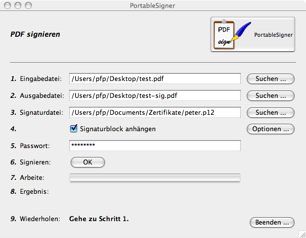
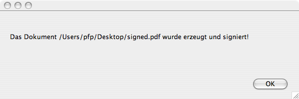

PortableSigner
PortableSigner
Ein Tool zum Signieren von PDF (Portable Document Format)
Dateien
PortableSigner ist ein Java Programm zum digitalen Signieren (mit X.509
Zertifikaten) von PDF Dateien. Es ist plattformunabhängig und
läuft derzeit (zumindest) unter Windows (2000, XP, ...), Linux
und Mac OS X.
Funktionen
Man kann PDF Dokumente mit X.509 Zertifikaten digital signieren, und
dafür sorgen, das diese Dokumente nicht weiter
verändert werden können, ohne dass das Dokument seine
Signatur verliert. Damit erreicht man eine elektronische "Unterschrift"
auf nahezu beliebigen Dokumenten. Dies entspricht wohl am ehesten dem
Ansatz "Electronic Paper".
Download
http://sourceforge.net/project/showfiles.php?group_id=181271
Was benötigt man?
- Dieses Programm
- Eine Java 1.5 kompatibele Runtime
- Eine PKCS#12 Datei mit einem persönlichen
Zertifikat (zum Beispiel von CaCert)
- PDF Dateien (eh' klar, oder?)
Betriebsmodi
PortableSigner kann in 2 unterschiedlichen Modi betrieben werden:
- GUI Desktop
Modus : Grafische Benutzeroberfläche für
das interaktive Signieren von einzelnen Dokumenten
- Commandline
Modus : Betrieb des selben Programms über die
Kommandozeile (für Batch oder Operatorlosen Betrieb)
GUI Desktop Modus
Sollte wie oben schon erwähnt eine Java 1.5 Runtime
installiert sein, so muss man nur die ZIP Datei (siehe Download)
auspacken und doppelklicken oder in dem ausgepackten Verzeichnis via
java -jar PortableSigner.jar
starten.
Nun sieht man etwas ähnliches wie hier:

Die Bedienung dürfte auf Basis dieser Maske relativ klar sein:
- Man selektiert eine Eingabedatei (die letzte Eingabedatei
bleibt vorselektiert).
- Man sucht sich eine Ausgabedatei.
- Man selektiert die PKCS#12 Datei (später werden
uch andere Typen von Dateiformaten unterstützt sein. Siehe
ToDo)
- Das Passwort der PKCS#12 Datei eingeben
- Den Button "Signieren" drücken
- fertig!
Als Abschluss kommt folgender Dialog:

Weiterhin gibt es noch einen "Über ..." Dialog auf dem
Hauptbildschirm. Dort erfährt man die aktuelle Version, welche
man auch anmerken sollte, wenn man mit mir in Kontakt tritt:

Commandline Modus
Das Programm unterstützt auch den Aufruf über
Commandline Parameter:
pfp$ java -jar PortableSigner.jar -h
usage: PortableSigner
-h Hilfe (diese Seite)
-n Ohne GUI
-o Ausgabedatei (PDF)
-p Signaturpasswort
-s Signaturdatei (P12)
-t Eingabedatei (PDF)
pfp$
Um das Beispiel von oben noch einmal als Kommandozeile
auszuführen, wäre also folgende Kommandozeile
notwendig:
pfp$ java -jar PortableSigner.jar -n \
-t /Users/pfp/Desktop/unsigned.pdf \
-o /Users/pfp/Desktop/signed.pdf \
-s /Users/pfp/Desktop/pfp.p12 \
-p MeinGeheimesPasswort
Das Dokument\n/Users/pfp/Desktop/signed.pdf\nwurde erzeugt und signiert!
pfp$
Um auch den Aufruf aus Macros zu unterstützen schaltet nur der
Schalter "-n" die GUI Komponente des Programms komplett aus!
Peter
Pfläging <pfp@adv.magwien.gv.at>
Dieses Programm wurde vom Rechenzentrum der Stadt Wien (http://www.wien.gv.at/ma14/)
erstellt.